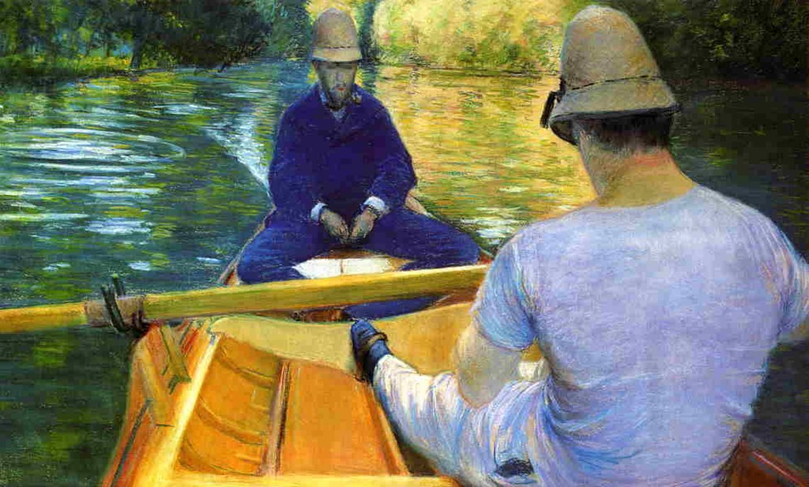

<head>
<meta charset="UTF-8" />
<meta name="keywords" content="drawing, painting" />
<meta name="description" content="drawings by Sunjy" />
<title>Sunjy</title>
<link rel="shortcut icon" type="image/x-icon" href="../../mImages/mCommon/favicon.ico" media="screen" />
<link rel="stylesheet" type="text/css" href="../../mCsses/mCommon/mCssA.css" />
<link rel="stylesheet" type="text/css" href="../../mCsses/mCommon/mCssB.css" />
<link rel="stylesheet" type="text/css" href="../../mCsses/mCommon/mCssC.css" />
<link rel="stylesheet" type="text/css" href="../../mCsses/mCommon/mCssD.css" />
<link rel="stylesheet" type="text/css" href="../../mCsses/mContent/mCssA.css" />
<link rel="stylesheet" type="text/css" href="../../mCsses/mContent/mCssB.css" />
<link rel="stylesheet" type="text/css" href="../../mCsses/mContent/mCssC.css" />
<link rel="stylesheet" type="text/css" href="../../mCsses/mContent/mCssD.css" />
</head>
<script type="text/javascript" src="../../mScripts/mContent/mContentAA.js" /></script>
<script type="text/javascript" src="../../mScripts/mContent/mContentAB.js" /></script>
<script type="text/javascript" src="../../mScripts/mContent/mContentAC.js" /></script>
<script type="text/javascript" src="../../mScripts/mContent/mContentAD.js" /></script>
<script type="text/javascript"></script> 
<script type="text/javascript">
document.write('<div class="mImgAbsolute"></div>');
/*
document.write('<p class="mFontSizeBColor" />From a white paper...</p>');
document.write('<table class="center"><tr><td>');
document.write('');
document.write('</td></tr></table>');
*/
</script>


<script type="text/javascript">
document.write('<p class="mFontSizeBColor" />Boaters on the Yerres</p>');
document.write('<p class="mFontSizeSColor" />“Boaters on the Yerres” by Gustave Caillebotte depicts a multi-person skiff being rowed on the Yerres River.<br><br>The passenger in blue is not participating in the rowing, so there must be a second-rower outside the frame to balance out the rowing.<br><br>Gustave Caillebotte was a patron of the Impressionists, although, as in this painting, he painted more realistically than many other Impressionists. Caillebotte was noted for his early interest in photography as an art form, and this influence is evident in this composition.<br></p>');
document.write('<table class="center" /><tr><td>');
document.write('<br>The passenger in blue is not participating in the rowing, so there must be a second-rower outside the frame to balance out the rowing.<br><br>Gustave Caillebotte was a patron of the Impressionists, although, as in this painting, he painted more realistically than many other Impressionists. Caillebotte was noted for his early interest in photography as an art form, and this influence is evident in this composition.<br>" />');
document.write('</td></tr></table>');
</script>


